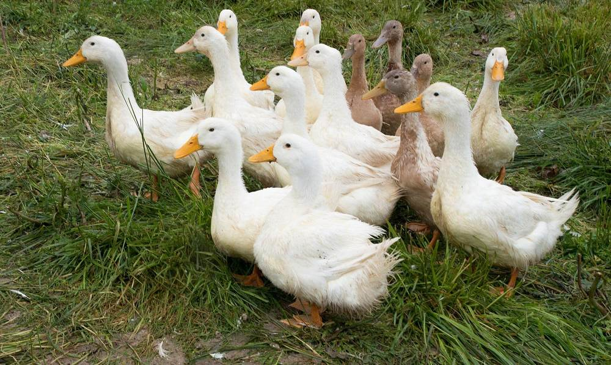
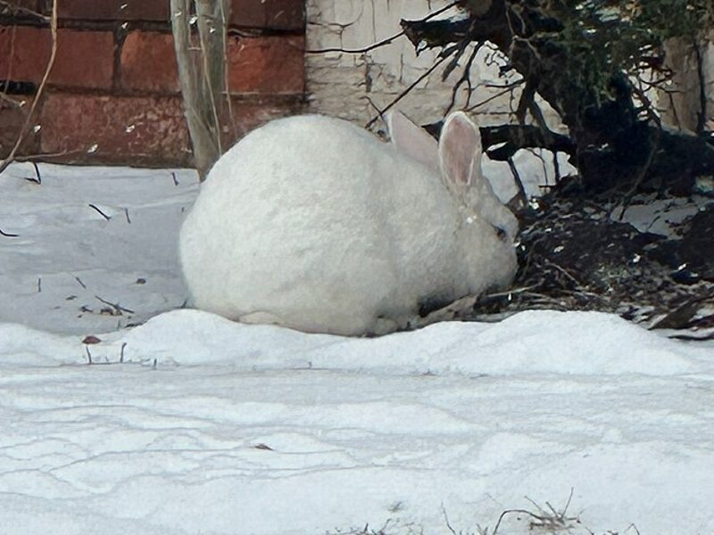

Tarifs sur demande


 Poulets
Poulets Pintades
Pintades Canards
Canards
LapinsAbattage de poulets, pintades, canards et lapins, dans le respect des normes sanitaires et du bien-être animal.
Plumage, éviscération, découpe, et bridage sur demande.
Conditionnement sous vide et étiquetage, dans le respect de l'hygiène et de la qualité.
Suivi de chaque lot, de la réception des animaux à la remise des carcasses.
Appui aux éleveurs dans une relation de partenariat durable.
Réception des animaux déposés par l'éleveur.
Contrôle des animaux et du lot.
Plumage, éviscération, découpe, bridage.
Sous vide, étiquetage.
Remise des carcasses à l'éleveur lors de l'enlèvement.
Jours d'abattagedu lundi au jeudiFermeture annuelledu 1er au 15 août
Dépôt des animauxLe jour même, de 6 h 00 à 8 h 00Retrait des carcassesLe jour même, de 13 h 00 à 15 h 00